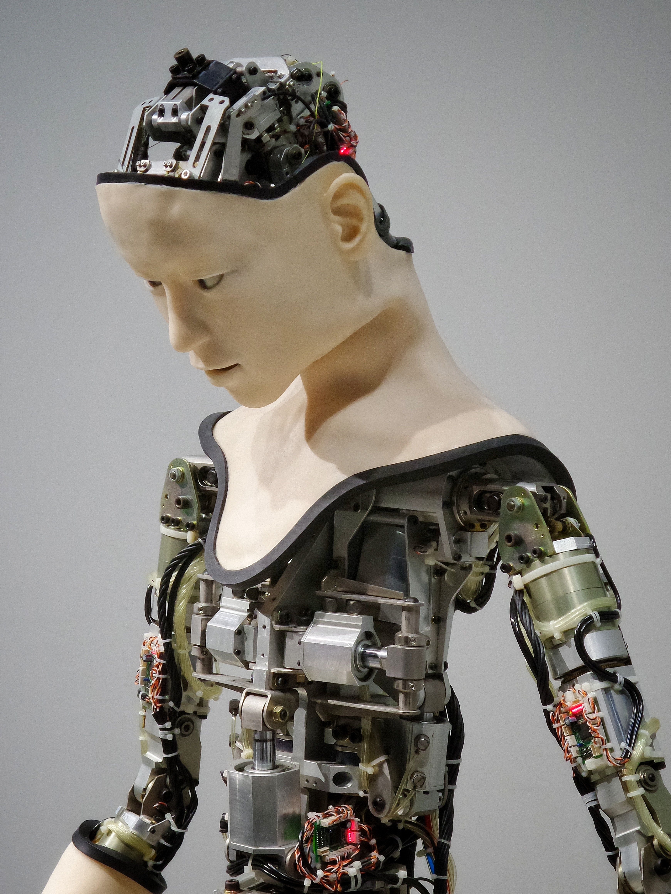

인공지능(Artificial Intelligence)이라는 용어가 처음 등장한 때는 1956년에 미국 다트머스의 한 학회에서 존 매카시가 이 용어를 사용하면서부터이다. 하지만 인공지능이라는 개념 자체는 훨씬 예전부터 있었다. 예를 들면, 앨런 튜링이 ‘생각하는 기계’의,
구현 가능성과 튜링 테스트를 제안한 것은 1950년의 일이다. 이 학회는 마빈 민스키, 클로드 섀넌 등 인공지능 및 정보 처리 이론에 지대한 공헌을 한 사람들이 개최한 것이다. 그리고 당연하지만 이런 일에 관심을 가진건 서방뿐만이 아니여서 소련 역시 아나톨리 키토프 박사가 본인의 저서 "붉은 서" 에서 "ЕГСВЦ(Единой централизованной автоматизированной системы управления народным хозяйством страны - 국가(계획)경제 네트워크 중심적 통제체계)" 라는 것을 제시하였는데, 이는 컴퓨터 네트워크화를 통한 더 나은 계획 경제 체제와 사회의 추구를 목표로 삼은 이론이었다. 이것을 소련 컴퓨터 공학자 빅토르 글루쉬코프가 더욱 개량한 것이 바로 OGAS(ОГАС - Общегосударственная автоматизированная система учёта и обработки информации, 전연방자동정보처리체계) 계획이다. 